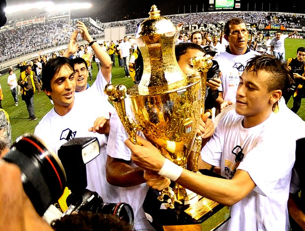
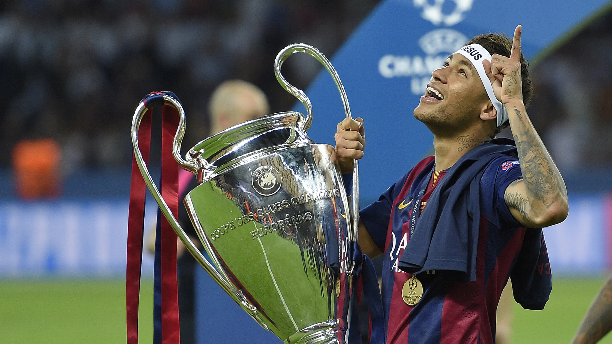

Jornada de Neymar
Vamos olhar os titulos e historia

O dia que neymar subiu para o profisional
Em 7 de março de 2009, o relógio marcava 14 minutos do 2º tempo, e o técnico Vagner Mancini chamava a camisa 18, um Menino da Vila de apenas 17 anos , para entrar no lugar de Maurício Molina. A trajetória profissional de Neymar Jr. se inicia.

Primeiro gol de Neymar no Profissional
no dia 15 e março de 2009, Neymar fazia seu primeiro como jogador profissional . Foi em um jogo do Campeonato Paulista, contra o Mogi Mirim, no Pacaembu.

Primeiro Titulo de Neymar
O primeiro título da carreira de Neymar . Aos 18 anos, ao lado de Ganso, o garoto liderou o Santos no Paulistão de 2010. Na final, diante do Santo André, ele e Ganso fizeram uma ótima partida e faturaram o troféu estadual. O jovem atacante fez 14 gols no campeonato
O Titulo da Libertadores da América
A partida de ida da final, contra o Peñarol, em Montevidéu, terminou sem gols, enquanto o jogo de volta, no Pacaembu, foi vencido pelo Peixe por 2 a 1. Neymar abriu o placar para o Alvinegro aos dois minutos do segundo tempo, Danilo ampliou aos 23 e Durval marcou contra aos 34.

O gol Hístorico
No dia 27 de julho de 2011, Neymar fez um dos gols mais bonitos da história do futebol. O feito levou o então atacante do Santos de 19 anos a vencer seu primeiro Prêmio Puskás (concedido ao gol mais bonito no ano) na carreira.

A conquista da Champions League
Passados os 30 anos de idade, Neymar venceu a Liga dos Campeões da Uefa apenas uma vez. O título veio durante sua passagem no Barcelona, na edição 2014/15, junto com Lionel Messi e Luis Suárez no único título europeu do "trio MSN"
O titulo mundial
No dia 20 de dezembro de 2015 neymar era considerado campeão do mundial de clubes